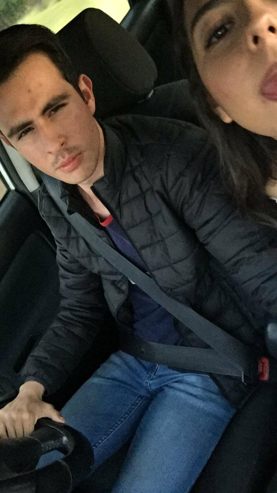

Amor de mi vida:
El dia de hoy, me encuentro pensando en ti, como cuaalquier dia normal en mi vida, todo me recuerda a ti, y eso me encanta, porque te siento cerca de mi, tal vez, no estemos cerca hoy, pero de verdad te juro que eres todo para mi.
Siempre veo tus fotos porque te extraño, y mucho. Te pedi una oportunidad, y te jure que he cambiado y quiero hacer biel las cosas contigo, eres mi vida; el dia de hoy he terminado despues de muchos dias hacer esto, creeme, al ver el restulado, me anamore de nostros y me dieron mas ganas de las que tenia para estar juntos.
Prometi hechos y no palabras, tal vez si, puede que este detalle no te guste o que no fue significativo para ti, pero en verdad, mi amor, lo hice con todo todo todo mi corazon.
Con este hecho te demuestro un poco de lo que viene, te juro que no te vas arrepentir si decides volver.
Siempre te hare sonreir, siempre buscare hacerte feliz, siempre te amare y cada dia con mas fuerza que el dia anterior. Te lo juro por mi vida. TE AMO
